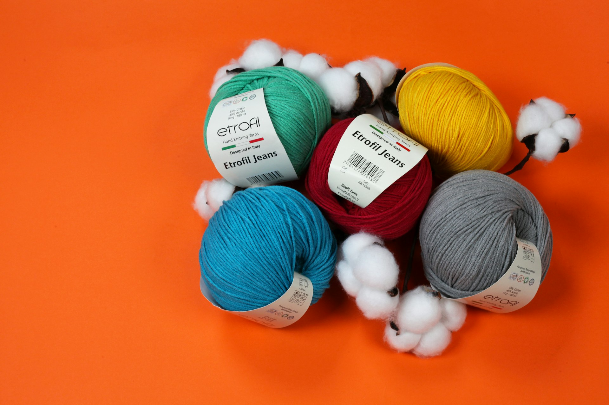
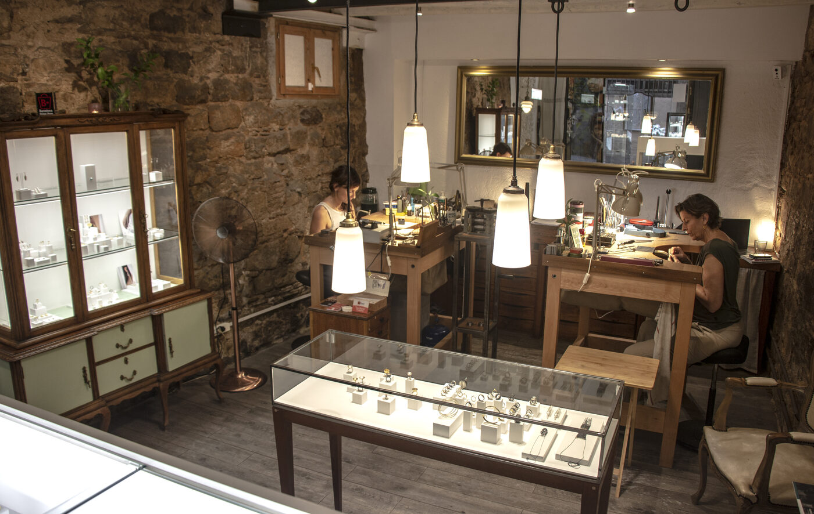

En un mercadillo, alguien paga 25 € por unos calcetines de lana tejidos a mano y se va tan contento. La tejedora también sonríe. Los dos creen que ha sido un buen trato, y los dos se equivocan: si ese ticket contara la verdad, pondría 149 €.
La diferencia no ha desaparecido. La ha pagado ella: en horas que no ha cobrado, en lana que se quedó en pruebas, en la cuota de autónomos de ese mes, en el IVA que nadie descontó.
Este artículo es ese ticket, desplegado. Vamos a ver cómo poner precio a tu artesanía construyéndolo capa a capa —tu hora, los materiales, el taller, los costes invisibles, los impuestos y, por fin, el margen— con fórmulas, porcentajes y una calculadora para que lo hagas con una pieza tuya antes de llegar al final. No es un artículo sobre cobrar caro. Es un artículo sobre dejar de pagar tú lo que tu precio no cobra.
(Si lo que buscas es cómo DEFENDER un precio ya puesto delante del cliente, eso lo contamos en Por qué la artesanía es mejor que el lujo y en el kit Defiende tu precio. Hoy toca lo anterior: construirlo.)
Las horas que nadie ve también son trabajo. Si no están en tu precio, las pagas tú.
Antes de empezar: cuatro datos que explican por qué cobras de menos
La conclusión de estos cuatro datos junta: el precio artesano no puede salir del instinto. Tiene que salir de una estructura. Vamos con ella.
Las siete capas del ticket
Todo precio honesto tiene las mismas siete capas. Si alguna está a cero, no es que seas más barato: es que la estás pagando tú.
1Tu hora (la que casi todos cobran a cero)
El error más caro del oficio: dividir el sueldo deseado entre TODAS las horas del taller. No: solo entre las horas productivas reales, que son el 60-70% de tu jornada.
Con números redondos: 40 h/semana × 46 semanas = 1.840 h/año. El 65% productivo ≈ 1.200 h. Un sueldo modesto de 1.300 €/mes × 12 = 15.600 €. Tarifa mínima: 13 €/h — solo para tu sueldo. Los costes del negocio van en sus propias capas, no dentro de tu hora.
2Materiales (lo que compras no es lo que usas)
Todo lo que lleva la pieza —también el cierre, la etiqueta, el embalaje— y las mermas: recortes, pruebas, la pieza que sale mal del horno. Entre un 10 y un 15% del material no acaba en nada vendible, pero lo pagaste igual.
3Amortización (tus herramientas se gastan trabajando)
El torno, el telar, la mufla, la máquina buena. Reparte su precio entre su vida útil y cárgalo a cada hora de uso.
Una mufla de 2.400 € usada 800 h/año durante 6 años sale a 0,50 €/h. Parece poco. Es la diferencia entre reponerla cuando muera o descapitalizarte.
4El goteo del taller
Alquiler (o parte proporcional de casa), luz, internet, seguro, gestoría, comisiones, web… y la cuota de autónomos, que en 2026 va por tramos de rendimiento: de 200 a 590 €/mes (80 € el primer año con tarifa plana). Suma tu goteo mensual y divídelo entre tus horas productivas del mes.
Un goteo contenido de 500 €/mes entre 100 h productivas = 5 €/h que cada pieza debe absorber. Silencioso, pero está en todas las etiquetas… o en tu bolsillo.
5Los costes invisibles
Diseñar, probar, fotografiar, publicar, contestar, preparar la feria, estar en la feria. Es trabajo del negocio, no tiempo libre. La manera simple de cobrarlo: un recargo del 10-15% sobre el coste de cada pieza. La fina: bolsa mensual de horas comerciales × tu tarifa ÷ piezas del mes.
6Los impuestos (el bruto no es tuyo)
- Haz las cuentas siempre sobre la base sin IVA. En 150 € con IVA al 21%, hay 26 € que son de Hacienda. Si calculas el margen sobre el total, tu margen es un espejismo.
- El matiz que casi nadie conoce: los objetos de arte vendidos por su autor tributan al 10%, no al 21% (art. 136 de la Ley del IVA): piezas únicas o series muy limitadas, firmadas y numeradas. Cerámica de ejemplar único, esmaltes firmados, tapiz tejido a mano de tu diseño. Confírmalo con tu gestoría: en según qué piezas es un 11% de respiro directo.
- El IRPF va aparte: reserva un 15-20% del beneficio para la declaración.
La etiqueta en blanco: calcular costes es aritmética, poner el margen es criterio.
7El margen (la pregunta que nadie te responde)
La duda que no se va nunca, ni con años de oficio: "¿mi margen está bien?". Primero, qué es: el margen es el beneficio del negocio, no tu sueldo — tu sueldo ya está en la capa 1. El margen es lo que permite reinvertir, aguantar un mes malo, financiar la colección nueva. Un negocio sin margen es un funambulista sin red.
No es un número mágico: es una decisión con tres criterios.
Por canal. En venta directa (taller, web, feria): 15-30% sobre el coste total. Si vendes a tiendas, la regla del sector es otra: coste × 2 = precio mayorista, y la tienda multiplica otra vez (× 2-2,5) hasta el PVP. Traducción dura pero útil: si tu coste × 4 da un precio imposible, esa pieza no es para mayorista. Saberlo antes también es dinero.
Por unicidad. Pieza única o encargo: 25-30% o más — no hay otra igual y tu criterio es parte del producto. Serie repetible: 15-20%, y busca eficiencia en producción, jamás bajando tu tarifa.
Por posicionamiento. Cuanto mejor comunicas (historia, proceso, materiales), más margen acepta tu mercado: el +17% del "efecto hecho a mano" es solo el punto de partida, sin contar tu relato. El margen no solo se calcula: se comunica. (De eso va nuestro artículo sobre artesanía y lujo.)
Las cuatro señales de que lo tienes mal puesto: vendes mucho y no queda nada a fin de mes · te da miedo que te pidan factura · una tienda te pide mayorista y "no salen los números" · solo puedes crecer trabajando más horas.

Cada hora de oficio que no entra en el precio la acabas regalando. La estructura sirve para que deje de pasar.
Pruébalo con una pieza tuya (ahora, aquí)
La calculadora del precio honesto
Mete los datos de una pieza tuya. Recalcula solo, sin salir de la página.
10% solo para obra de autor (art. 136 LIVA) — consúltalo con tu gestoría.
El ticket de la verdad: los calcetines, céntimo a céntimo
** TRABAJO REGALADO: ~87 €/PAR **
Y una honestidad más, para que nadie nos acuse de inflar: este cálculo es conservador. Tejer un par de calcetines de adulto suele llevar entre 8 y 15 horas reales, no 5,5. Si discutes las horas, el precio honesto no baja: sube.
Donde el valor se entiende, el precio justo no se discute: se agradece.
"¿Y si el precio honesto es invendible?"
La pregunta correcta — y la respuesta nunca es "regala horas". Si tu mercado no puede pagar el precio real, el cálculo no está mal: te está dando información. Tres salidas, las tres con arreglo:
Cambia el canal. Unos calcetines de 149 € no se venden en un mercadillo con producto industrial al lado. Se venden con su historia: venta directa, encargo, tienda que entiende el valor. El problema no era tu precio; era tu escaparate.
Cambia la pieza. Hay productos que, cobrados con honestidad, no son viables en tu mercado. Saberlo te deja diseñar para producción: menos horas por pieza sin tocar tu tarifa, series más eficientes, y lo lento reservado para encargo.
Cambia el relato. Un precio se acepta cuando se entiende qué lleva dentro. Hacer visible lo invisible —horas, material, proceso— es la otra mitad del trabajo. Empieza por contar tu oficio para que se entienda.
Así se ve cuando las tres cosas están bien puestas

Espai Micra · El Born, Barcelona
Las joyeras Anne Waha y Adriana Díaz Higuera comparten taller-tienda: cada una crea sus colecciones, pero comparten espacio, herramientas y una misma filosofía — joyería artesanal de alta calidad con un compromiso firme con la sostenibilidad. Ambas trabajan con materiales de origen responsable: oro Fairmined y Fairtrade, gemas de minería responsable y plata de pequeña minería artesanal.
Fíjate en las tres decisiones: canal propio (taller-tienda donde la pieza se explica sola y se vende directa), estructura compartida (dividir el goteo del taller entre dos es bajar la capa 4 sin tocar ninguna tarifa) y relato honesto (la trazabilidad como parte del valor, no como adorno). Así es como un precio justo se sostiene en la vida real.
Los cinco errores que más dinero cuestan
- Cobrar tu hora a cero. "Es que me gusta hacerlo" no es un plan de negocio: es la puerta de la autoexplotación.
- Calcular sobre el precio con IVA. El 21% no es tuyo. Margen calculado sobre el total = margen imaginario.
- Confundir margen con sueldo. Si tu "beneficio" es tu nómina, tu negocio gana exactamente cero.
- Dar tu precio directo a una tienda. Sin estructura de canal (coste ×2 ×2), o pierdes la tienda o pagas tú la diferencia.
- Bajar el precio en vez del coste. Si algo no sale, se rediseña la pieza o el proceso — tu tarifa no se toca.
Esta semana, en tu taller
- Pasa por la calculadora tus 3 piezas clave: la que más vendes, la más costosa, tu favorita.
- Apunta tu goteo mensual real (todo: cuota, luz, comisiones, gestoría).
- Decide el margen de cada pieza con los 3 criterios (canal, unicidad, posicionamiento).
- La pieza con el agujero más grande: súbela ya o rediséñala. Sin pedir perdón.
📥 Llévate el método completo: "Calcula tu precio"
La guía en PDF con los 7 pasos, los porcentajes orientativos de cada capa, los criterios del margen y la hoja de cálculo para tus piezas. Gratis.
Descargar la guía gratis →Preguntas frecuentes
¿De verdad puedo facturar mis piezas al 10% de IVA?
¿Cómo subo el precio a mis clientes de siempre?
¿Y en mercadillos y ferias populares, donde nadie paga esos precios?
¿Cuál es el margen mínimo viable?
¿Los encargos a medida se calculan igual?
Conclusión
El precio no se adivina: se construye. Y solo se defiende con tranquilidad el precio que sabes de dónde sale. Construye el tuyo capa a capa, ponle un margen con criterio y deja de financiar con tus horas el ticket de otros.
Cuando lo tengas, la segunda mitad del camino es contarlo: para eso están el kit Defiende tu precio y, si quieres que revisemos juntos precio, canal y relato, el Diagnóstico 3D.
Cada oficio guarda una historia que merece ser contada. La de tu precio, también.